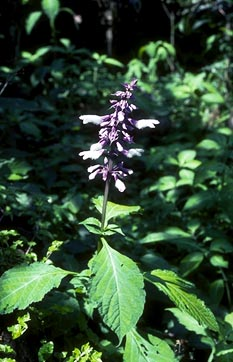

THE BOTANY OF SALVIA DIVINORUM (LABIATAE)
Distribution, Ecology, & Flower InitiationDuring the winter of 1984-85, approximately 15 populations of S. divinorum were located, though for the purpose of mapping their distribution, several populations are merged because of their proximity.
Distribution of Salvia divinorum Epl. & Jat. Arrows point to populations found during fieldwork in the winter 1984-85. In addition to the locations shown, the type specimen was collected in (near?) San Jose Tenango. Miguel Aleman Dam refers to the lake. (Adapted from McMahon 1973.)
Salvia divinorum
was first located (Reisfield & Solheim 1177) about 2 km north of the village
of Huautla de Jimenez in a very wet, somewhat disturbed, shaded ravine at the
edge of a coffee plantation. The coffee plantation apparently replaced a
cloud forest, the remnants of which included Liquidambar macrophylla Oerst.
and Hedyosmum mexicanum Cordem. Plants of S. divinorum were found growing
along a streambank, with some stems trailing near or in water, rooting
copiously at the nodes and sometimes along internodes. Broken, trailing, and
drooping stems were noticed to resume erect growth at the stem apex or by
axillary branching, with new, vigorous shoots often arising from the axils of
old, senescent stems.
All living stems were observed to arise from stems that
had since died, the dead stems lying on or in the ground, sometimes appearing
as woody caudices. Many stems were cut, apparently by people who collected
the leaves for medico-religious use. Several old, dried, inflorescence
branches (rachises) were present but no fruit were found. Later, similar
populations (Reisfield & Solheim 1090, 1092) were found in other ravines near
Huautla.
The road from Huautla (1700 m) to Ayautla (760 m) is copiously criss-crossed by streams and wet ravines that were searched for populations of S. divinorum. A few such populations (Reisfield & Solheim 1111-12) were finally found near Ayautla, and these again showed signs of past flowering, but all the old floral stems were entirely naked (in Salvia, the developing fruit are enclosed by a persistent calyx, but failure of the nutlets to develop normally leads to calyx abscission). The plants were spreading vigorously along the rocky streambanks, and erect shoots emerged mostly from a thick litter composed of older decaying stems. One branch was completely severed, lying in shallow water and rooting along the internodes. An additional population in this area, chosen by a local shaman, Maria de la Oz Unda, to supply the leaves for the divinatory ceremony we had requested, grew among the trees of a coffee plantation. Although there was no running water at this site, the many epiphytic ferns and orchids suggested that this wooded mountain slope is regularly blanketed in fog. Similar stands of S. divinorum in "cafetals" were found near Huautla (Reisfield & Solheim 1090) and Cerro Quemado (Reisfield & Solheim 1108).
Flowering of S. divinorum, as in many forest understory species, is promoted by sunlight, and the extent of flowering of a given population is dictated by the amount of sunlight that penetrates the canopy. We saw our first flowering population of S. divinorum (Reisfield & Solheim 1093) near the village of Chilchotla (1200 m). The plants colonized the banks of a broad, shaded ravine with several pools of standing water. The channel of the ravine was mostly without vegetation and almost certainly flooded during wetter periods. The vegetation suggested a transition between cloud forest (e.g., Hedyosmum, Liquidambar) and tropical evergreen forest (e.g., Syngonium and other Araceae), and climatic data (Garcia 1973) indicates that this area is extremely humid, with an annual average of 472 cm of rain. This flourishing population of plants appeared to be clonal, spreading vegetatively in the same fashion as populations observed previously. Inflorescence rachises past the flowering stage were again entirely naked, and not a single mature nutlet was found. The beautiful white and violet flowering stems, found only in patches where sunlight penetrated the canopy, were very conspicuous. This observation suggests the main distinction between this and previous sites where populations of S. divinorum were found. The breadth of this ravine allows a greater penetration of sunlight, while the extreme humidity of the region prevents even sunny microhabitats from drying out. It is this interplay between sunlight and humidity that apparently dictates the success and the extent of flowering of a given local population of S. divinorum.
Another flowering population (Reisfield & Solheim 1109) was found on a
steep face of Cerro Alto, the mountain adjacent to the village of Ayautla.
This trailside population formed a thick, shaded stand, with crowded stems
over 2 m tall. Flowering branches, up to 3 m tall, rose above the rest and
received filtered or direct sunlight. Valdes (1983) reported he collected
plants from Cerro Rabon, a somewhat more distant mountain,
 but our local
guide, Pedro Diaz, insisted that he knows "La Maria [S. divinorum] very well,
and in 40 years of walking Cerro Rabon, [he] never saw it up there."
but our local
guide, Pedro Diaz, insisted that he knows "La Maria [S. divinorum] very well,
and in 40 years of walking Cerro Rabon, [he] never saw it up there."
Several populations of S. divinorum (Reisfield & Solheim 1102-03, 1106-08)
were found on the east-facing bluffs above the village of Cerro Quemado, on
the western bank of the Aleman Dam. At roughly 300-400 m elevation, these
stands were scattered along a steep trail that winds between the peaks of
Cerro Quemado and Cerro Camaron. Some plants were found in a slash-and-burn
cornfield, where most of the associated vegetation was disturbed, replacing a
tropical evergreen forest with Brosimum, Dendropanax, and Urera. Many
flowering stems were found, these always in partial to full sunlight,
sometimes dried out to the degree that the leaves were badly wilted.
Climatic
data for the nearby village of Ixcatlan (Garcia 1973) indicates that this area
is considerably warmer than the highland regions of the Sierra Mazateca, the
wilting plants perhaps demonstrating that S. divinorum is here at its limit of
evapo-transpiration tolerance. On the other hand, these same populations
included more flowering stems than any other, again indicating that flowering
of S. divinorum is promoted by sunlight, and perhaps the stress of drying out
to a certain degree. This is reasonable in light of the heliotrophic nature
of Salvia in general, with mostly species of open ground and with brightly
colored flowers. Salvia divinorum, though, with its crisp, watery, easily
broken, hollow stems, is clearly a hydrophyte, and most aggressively colonizes
sites that are dark and humid.
Vigorous, flowering populations are found in
conditions of marginal light, and in very humid areas (e.g., Chilchotla), the
plants can "venture out of the shade" into the sunlight where they will
flower.
Conditions that promote vegetative growth of S. divinorum are different than those that promote flowering, and this is reflected in the character and distribution of populations. The Mazatecs displaced by the Aleman Dam, who now live in the low-lying "tierra caliente" on the eastern side of the dam, have tried, unsuccessfully, to cultivate S. divinorum (Diaz, pers. com.). This region receives similar amounts of rainfall as the highland areas of the Sierra Mazateca, but is warmer, and consequently drier. Thus, in order to gather fresh leaves, some of these Indians travel by boat across the lake to the hillsides near Cerro Quemado, where the populations are at their limit of evapo-transpiration. Throughout the higher, cooler regions inhabited by the Mazatec, flourishing populations may be found in shaded ravines near water, or on mountainsides continuously bathed in fog. In the latter type of site, often a hillside planted to coffee, S. divinorum is almost certainly introduced, and the Mazatecs do this by simply sticking a severed branch into the soil. Though the more remote, aggressive populations along watercourses seem not to have been planted, they may in fact have been introduced long ago. The Mazatecs do not distinguish between wild and cultivated populations, nor do they attach any significance to the flowers.
 While Emboden (1979) reported that S. divinorum flowers only when the "branches" [stems] are seven feet or more in length, Valde°s et al. (1987) concluded that plant height is a minor factor in flower initiation. In the Sierra Mazateca, most flowering stems are, in fact, very long, since the stems that elongate the most are most likely to receive direct sunlight. Plants grown in the University of Wisconsin Greenhouses received unfiltered sunlight, and those which were subjected to the short-day treatment flowered profusely on branches of varying lengths.
Flower buds on greenhouse-grown plants were first noted roughly 2 months after the beginning of the short day treatment, and the first flowers did not open until almost one month later. The nearly 3 month lag between the time the plants first perceived the stimulus to flower and the onset of flowering correlates with the results of Valdes et al. (1987), but raises the question of whether any critical threshold period is really perceived by the plants. The type specimen was collected in flower by Hofmann and Wasson on October 8 (I am unaware of the collection flowering in August, referred to by Valde°s), which suggests that these plants perceived the stimulus to flower more than 3 months earlier, that is, in late June, during the period with the longest days of the year. The mechanism responsible for flower induction is apparently not as simple as our greenhouse and growth chamber experiments would suggest, and the actual induction of flower primordia probably involves several factors, including temperature and water regimes. Perhaps the critical stimulus perceived by the plant is an increase in the length of the night per se, an hypothesis that could easily be tested. Flowering plants have been collected from near Cerro Quemado in March, and local villagers insisted S. divinorum flowers most abundantly in March, April, and May, when it is the driest. In light of the conditions that promote flowering during the cool and wet winter, these assertions seem more than reasonable.